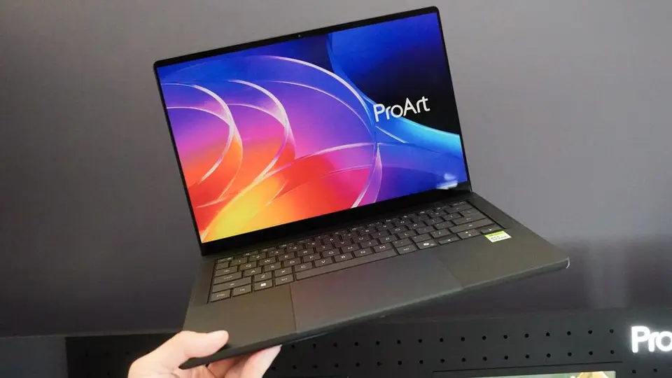
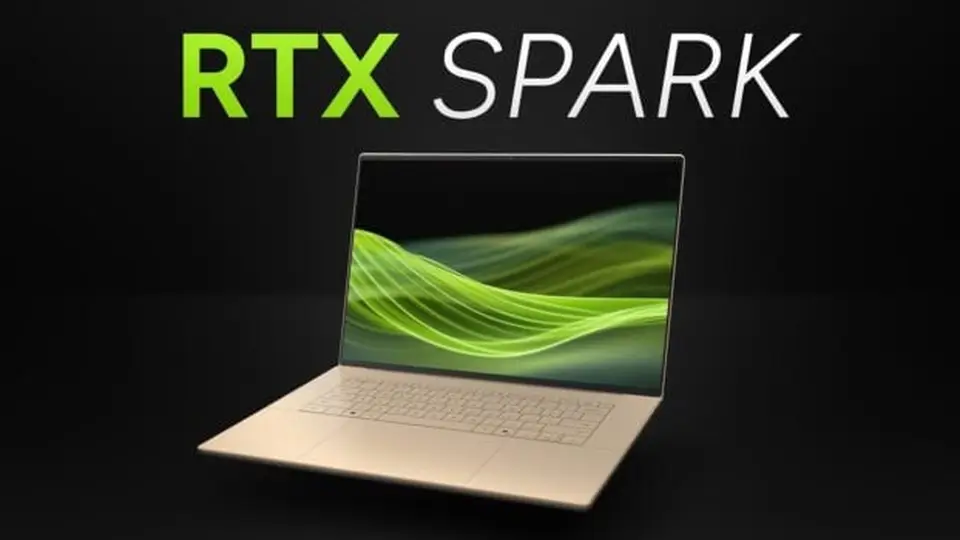

Goodweek raises €10.69M to become the 'AI Manager' for small businesses — a governance play on shadow AI
- Who: NVIDIA and partners ASUS, Dell, HP, Lenovo, Microsoft and MSI.
- What: RTX Spark laptops on sale worldwide, from $2,599; compact desktops follow in November.
- When: Announced and available October 16, 2026; preorders opened October 7.
- Specs: Up to 128GB unified memory; up to 1 petaflop of FP4 AI compute; Blackwell RTX GPU (up to 6,144 CUDA cores) + Grace CPU (up to 20 cores); 45–80W envelope.
- Day-one software: Local agents including GitHub Copilot, Hermes, OpenClaw, Perplexity, Pi and WorkBuddy; Nemotron 3.5 Bolt 74B-A9B 24GB; Adobe Photoshop/Premiere beta acceleration; games from Cyberpunk 2077 to NBA 2K27 with DLSS 5.
- Canada: ASUS ProArt P14 starts at C$3,499 and P16 at C$4,999, shipping today through the ASUS Store, Amazon Canada, Best Buy Canada, Memory Express and Newegg Canada.
NVIDIA has declared the age of the local-agent laptop open: on October 16, 2026, the company announced that RTX Spark laptops are available globally from ASUS, Dell, HP, Lenovo, Microsoft and MSI, starting at $2,599. Each machine is built around a single superchip that fuses a Blackwell RTX GPU with a Grace CPU and up to 128GB of unified memory — enough, NVIDIA says, to run large models and AI agents entirely on the device, with AAA gaming and creative apps as part of the day-one pitch.
What went on sale
The launch lineup reads like a who’s who of Windows OEMs: ASUS ProArt P14 and P16, Dell XPS 16, HP OmniBook Ultra and OmniBook X 14, Lenovo Yoga Pro 9n, Microsoft Surface Laptop Ultra, and MSI Prestige N16 Flip AI+ and Prestige N16, according to Unite.AI’s launch roundup. The systems are sold through the manufacturers’ own websites and major retailers; NVIDIA’s announcement lists retailers including Amazon, Ant Online, B&H Photo Video, Best Buy and Costco, and notes launch events with live demonstrations in Taipei, Seoul, Beijing, Istanbul, San Francisco and Berlin. NVIDIA is also dangling a limited-time promotion for new Perplexity users.
Preorders opened October 7 at Microsoft’s Windows AI and Surface event in San Francisco, so today is the day the first machines actually start reaching buyers. Compact desktop configurations — including Microsoft’s RTX Spark Dev Box — follow in November.

The superchip
Every RTX Spark system runs on the same formula: an NVIDIA Blackwell RTX GPU and an NVIDIA Grace CPU on one die, with up to 128GB of high-bandwidth unified memory shared between them, and up to 1 petaflop of FP4 AI performance. MediaTek collaborated with NVIDIA on the custom Grace CPU design.
NVIDIA’s spec sheets list two laptop configurations of the RTX Spark N1X: a 6,144-core Blackwell GPU with a 20-core Grace CPU and up to 128GB of LPDDR5X, or a 5,120-core GPU with an 18-core CPU and up to 64GB — both inside a 45-to-80-watt envelope, on Windows 11. The pitch is that one pool of memory lets demanding creative projects and local AI models run at the same time, without shuttling data between a GPU and system RAM.
Agents, out of the box
This is where NVIDIA wants the differentiation to land. Guided setup and installers get buyers started with agents including GitHub Copilot, Hermes, OpenClaw, Perplexity, Pi and WorkBuddy — no command line required. Nous Research’s Hermes agent is there so people can “run open models and agents locally on a Windows laptop,” in CEO Dillon Rolnick’s framing, and NVIDIA’s own Nemotron 3.5 Bolt 74B-A9B 24GB — a 74-billion-parameter model built for tool calling and multistep tasks — is available for supported configurations.
Permissions are managed through NVIDIA’s OpenShell secure runtime and Microsoft Execution Containers, and NVIDIA’s open-source Skills repository on GitHub teaches agents to use NVIDIA CUDA-X tools. NVIDIA PAIR extends the setup across devices: one RTX Spark PC can serve AI inference to compatible Windows, Linux and macOS machines on the same home network.

For creators and developers
Adobe is adding NVIDIA TensorRT acceleration to AI-editing features in Photoshop, Premiere and Substance 3D, with native RTX Spark support in Photoshop and Premiere arriving through beta releases at launch. NVIDIA Broadcast 2.3 cleans background noise from existing recordings and adds Studio Voice Mic Profiles; beta RTX Video features bring super resolution up to 4K and frame generation up to 4x; and new RTX Video nodes in ComfyUI can take 15-fps AI-generated video to 60 fps in HDR without per-use cloud inference charges. NVIDIA says the machines handle 8K 4:2:2 video editing and 3D scenes up to 90GB while running on battery.
On the developer side, NVIDIA and Microsoft have readied the first PyTorch-CUDA build for Windows on Arm, the first default-native Python build, the first native Conda installer, and support for 97% of the top 15,000 Python packages. Native CUDA keeps locally processed code on the device, with a deployment path across more than 150 million NVIDIA RTX AI PCs and NVIDIA GPUs in the cloud.
And it plays games
Launch support spans Cyberpunk 2077, Fortnite, Gears of War: E-Day, Marvel Rivals, World of Warcraft and NBA 2K27. NBA 2K27 uses DLSS 5 with a 3D-Guided Neural Rendering feature, and NVIDIA says a new AI model — described as 2x faster and available from today — increases DLSS 5 frame rates by up to 1.4x. The headline claim: AAA games above 100 frames per second at 1440p on a slim laptop.
“RTX Spark brings the power of NVIDIA AI, RTX graphics and CUDA together with Microsoft Windows in one PC for creating, gaming and running personal AI agents,” said Jensen Huang, NVIDIA’s founder and CEO. “Together with Microsoft and our PC industry partners, we’re bringing creators, developers and gamers a new generation of Windows PC.” Yusuf Mehdi, Microsoft’s executive vice president, called it a step toward Windows as a platform for “hybrid intelligence, where AI can run locally when it makes sense and reach the cloud when needed.”
ASUS ships in Canada today
ASUS moved first in Canada: its announcement says the ProArt P16 and P14 — purpose-built for creators and AI developers — are available for purchase and shipping today, October 16, through the ASUS Store, Amazon Canada, Best Buy Canada, Memory Express and Newegg Canada. The ProArt P14 is available at launch with 24GB or 128GB of LPDDR5X memory, the P16 with 32GB or 128GB; pricing starts at C$3,499 for the P14 and C$4,999 for the P16. The 48GB P14 and 64GB P16 configurations arrive later in 2026.
The question hanging over all of this is whether buyers actually want their agents local. NVIDIA is betting that 128GB of unified memory, a petaflop of compute and day-one software make the case — and six of the biggest PC makers are betting alongside it.
Frequently asked questions
Which RTX Spark laptops are on sale today?
ASUS ProArt P14 and P16, Dell XPS 16, HP OmniBook Ultra and OmniBook X 14, Lenovo Yoga Pro 9n, Microsoft Surface Laptop Ultra, and MSI Prestige N16 Flip AI+ and Prestige N16. Prices start at $2,599; compact desktop configurations follow in November.
What makes RTX Spark different from a regular gaming laptop?
A single superchip combining a Blackwell RTX GPU and a Grace CPU with up to 128GB of unified memory, delivering up to 1 petaflop of FP4 AI performance — designed so large AI models and agents run locally on the device, alongside AAA gaming (over 100 fps at 1440p) and creative work like 8K video editing and 90GB 3D scenes.
Which AI agents and apps work on RTX Spark at launch?
Agents including GitHub Copilot, Hermes, OpenClaw, Perplexity, Pi and WorkBuddy, plus NVIDIA’s Nemotron 3.5 Bolt 74B-A9B 24GB model; Adobe Photoshop and Premiere with TensorRT acceleration in beta; NVIDIA Broadcast 2.3; and games including Cyberpunk 2077, Fortnite, Gears of War: E-Day, Marvel Rivals, World of Warcraft and NBA 2K27 with DLSS 5.